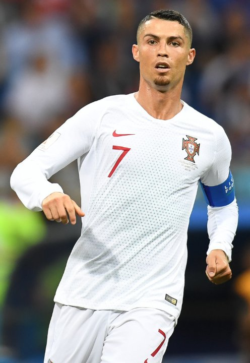

Refusing Selfies, Shoving Fans — 'Above It All' Arrogance
Hotel shove: According to Goal.com, outside the Portugal national team hotel Ronaldo shoved a fan who rushed up for a photo, snapping coldly 'Get out of here'. Once the video leaked, the 'arrogant' tag was firmly reapplied.
Cold face after 5-0 rout: In another widely shared incident, after Portugal's 5-0 win a fan broke through security for a selfie; Ronaldo not only refused, he shoved the man away. Forbes Middle East and the Daily Mail both covered it, sparking polarised debate.
The 'above it all' attitude: Such incidents are not isolated. From airports to training grounds, Ronaldo has repeatedly been caught pulling a long face at ordinary fans, waving them off or even verbally chastising them. That condescending attitude stands in stark contrast to his carefully cultivated 'fans-first idol' image.
The Messi contrast is automatic: Public opinion instinctively compares him to Messi, who almost never refuses selfie requests and even proactively stops to humour young fans. That contrast is shared and reshared endlessly, cementing Ronaldo's 'hard to deal with' stereotype.
The security excuse won't wash: Supporters plead 'self-protection' or 'security risk', but critics argue: real big stars know how to smile and offer brief cooperation to defuse awkwardness, not shove. Treating every approach as a threat is itself an over-defensive arrogance.
Cracks in the persona: On one hand the CR7 brand markets 'approachable, inspiring, grateful'; on the other, the recurring cold-shoulder to fans. That split keeps shattering the 'idol filter'. When a star treats supporters as a nuisance rather than the source of his livelihood, the blowback is only a matter of time.